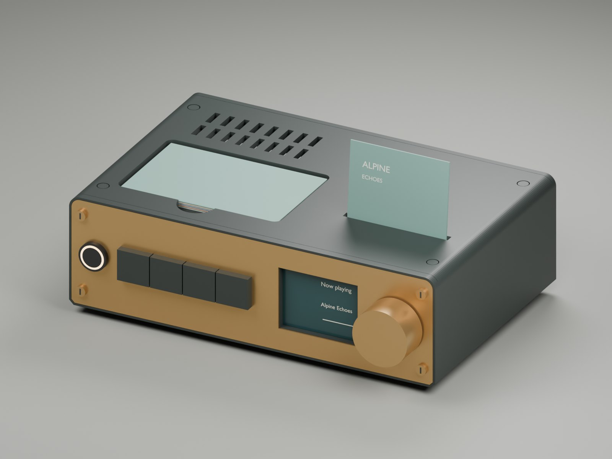

NFC Album Player
A tabletop music player where each album is a card. Put a card in the slot and its album plays; take it out and it pauses.

About
It is built for a Hi-Fi shelf: a proper DAC, a screen, a knob, and local storage for a whole collection.
- Cards are albums. Blank NFC cards are linked to albums on the device itself. A card remembers where it stopped. A card can also play a whole artist, or a list: a folder of songs from different albums.
- Hi-Fi output. A Raspberry Pi DAC Pro provides 3.5 mm and RCA (white and red) outputs.
- Screen and controls. A 2-inch display shows the cover, track and time. A clicky knob sets the volume and scrolls lists; four keys do previous, play/pause, next and back. Hold previous or next to scan; press back to pick a track from a list, or hold it for 2 seconds to start the album again.
- Music over USB. Plug the player into a computer and its music appears as a drive called
MUSIC. - Web remote. A page served by the player controls playback, links cards, and uploads or deletes music from any phone or computer on the same Wi-Fi.
- Settings on the device. A Wi-Fi icon shows the signal. Hold the knob with no card in for settings: join a new Wi-Fi network from a phone, set a volume limit, or see the web remote's address.
Guides
User manual
Using the player: linking cards, the knob and keys, every screen, Wi-Fi and settings, adding music over USB, the web remote and the Setup page.
GuideBuild guide
Parts list, flashing the SD card, fitting the DAC, wiring each part with a check command, adding music, the web remote, backups and troubleshooting.
GuideCase assembly
What goes where, measuring your parts, printing, the keys and knob, step-by-step assembly, dimensioned drawings and the brass face.
SourceREADME and code
The repository on GitHub: the player program, Pi setup scripts, tests and the case model.
Jump into the build guide
- Parts
- 1. Flash the SD card
- 2. First boot
- 3. Fit the DAC
- 4. Install the player
- 5. Wire and test
- 6. Add music
- 7. Use it
- 8. Web remote
- Troubleshooting
Status
The electronics and software are done. The only step left is the case.
- The hardware has been built and tested on a real Pi: the DAC, NFC reader, knob, buttons, power key and light, and USB drive mode, along with setup and the web remote. The screen tested so far is the 0.91-inch SSD1306 OLED.
- The 2-inch ST7789 SPI display has not yet been tried on the real Pi, only in the simulator.
- The player logic, screens and web remote are also tested without the hardware, using a browser simulator.
- The case is designed but not yet printed and assembled.
Hardware
| Part | Used here |
|---|---|
| Computer | Raspberry Pi Zero 2 W |
| DAC | Raspberry Pi DAC Pro |
| Display | 2-inch ST7789 SPI LCD, 320×240 |
| NFC reader | PN532 over SPI, with NTAG215 cards |
| Knob | 24-click rotary encoder with push switch |
| Buttons | Five momentary push buttons: four for playback, one for power |
| Power light | An LED on GPIO 22, lit from early in boot until the Pi has shut down |
Prices, alternatives and wiring are in the build guide's parts list.
Case
A 3D-printed case with a brass front. Every dimension lives in case.py; Blender scripts build the STLs, pictures, drawings and the assembly guide from it, so they always match. Start with the assembly guide, and print the fit gauge first to check your printer's tolerances.
Printable parts (STL)
To look at a part in 3D first, open it on GitHub, which has an STL viewer.
Drawings
- Front panel
- Rear panel
- Board stack section
- Keys and knob section
- Brass face template (print at 100%)


Source files

Try it without any hardware
The simulator shows the display in a browser and stands in for the knob, buttons, cards, USB port and Wi-Fi.
python3 -m venv .venv
.venv/bin/pip install pillow numpy python-mpd2 pytest qrcode
.venv/bin/python -m player.demo_library demo/music
.venv/bin/python -m player.main --simThen open http://localhost:8137 for the simulated device and http://localhost:8080 for the web remote. The demo library is generated sine tones, and the simulator is silent unless you run it against MPD (system/mpd-dev.sh, then add --playback mpd). Add mutagen to the install line to read tags from your own music with --music.
Run the tests with .venv/bin/python -m pytest.
Code map
| Where | What it is |
|---|---|
player/app.py | The player's behaviour: a state machine fed with events from cards, controls, USB and the web. |
player/ui/render.py | Draws the screens. |
player/hw/ | Drivers for the display, NFC reader, knob and buttons and USB drive mode, the simulator, and bring-up checks for each part. |
player/web/ | The web remote, and the page a phone uses to give the player a new Wi-Fi network. |
player/wifi.py | The Wi-Fi signal for the screen, and the setup network for joining a new one. |
player/playback.py | Talks to MPD, which does the decoding and audio output. |
system/ | The Raspberry Pi setup script and service files. |
NFC-Player-Case/ | The 3D-printed case: model, STLs, drawings and assembly guide. |
tests/ | Tests for the player, hardware drivers, web remote and deleting music. |
A note on the web remote. It has no password. Anyone on the same network can control playback and add or delete music. Use it on a home network you trust, or turn it off with --web-port 0.